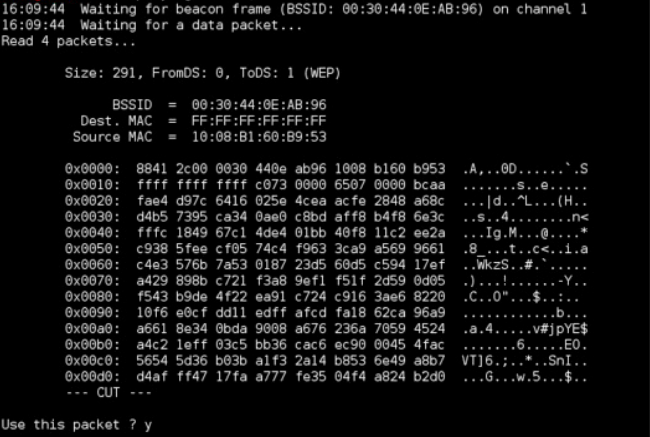

I - Introduction
Qu'es ce que le Cracking ?
Le Cracking est le processus de récupération de mots de passe à partir de données stockées ou transmises par un système informatique.
En gros, c'est le faire de retrouver un mot de passe à partir de données chiffrés comme un hash par exemple
Que peut on cracker ?
On crack principalement les hash car ils contiennent généralement un mot de passe.
Quand on s'inscrit sur un site, celui-ci stocke votre mot de passe dans sa base de donnée sous forme de hash. Ce procédé permet que si la base de donnée se fait pirater, le hacker n'a pas directement votre mot de passe.
Un hash ne peut pas être déchiffrer aussi simplement que le md5 ou le sha1 car une fois que le mot de passe à été hashé, on ne peut plus faire machine arrière.
Il existe cependant un moyen de retrouver le mot de passe à partir du hash et la technique est assez simple
Il suffit simplement de hasher un mot de passe et de le comparer avec le hash que l'on as
Des outil on été crée pour automatiser ce processus affin de tester des millier/millions/milliars de mots de passes par seconde
Dans cet article, je vais vous montrer ces fameux outils et vous expliquer comment vous en servir.
Cracking par BruteForce
Le cracking par BruteForce consite à tester toutes les possibilités possibles et imaginables afin de trouver le mot de passe.
C'est la technique la plus longue mais elle peut marcher si le mot de passe est court et pas trop compliqué.
Cracking par dictionnaire
Le cracking par dictionnaire consiste à tester les mots de passes avec une liste de mots de passes.
C'est la technique pour fonctionne le plus souvent car les mots de passes dans ces listes sont des mots de passes qui ont fuités de bases de données de sites donc si le mot de passe à été réutilisé sur plusieurs sites, il deviens très facile à cracker.
II - Les outils
Crunch

Crunch est un générateur de wordlists où vous pouvez spécifier un jeu de caractères standard ou n'importe quel jeu de caractères à utiliser pour générer les wordlists. Les wordlists sont créées par combinaison et permutation d'un ensemble de caractères. Vous pouvez déterminer le nombre de caractères et la taille de la wordlist.
Commandes :
Utilisation :
crunch [longueur min] [longueur max] [caractères]
Afficher l'aide :
crunch -h
Générer une wordlists d'une longueur de 4 avec tout les chiffres dans un fichier nommé "chiffres.txt" :
crunch 0 4 0123456789 > chiffres.txt
Générer une wordlist d'une longueur de 10 avec toutes les lettres de l'alphabet dans un fichier nommé "lettres.txt" :
crunch 0 10 abcdefghijklmnopqrstuvwxyz > lettres.txt
Une version windows est disponible pour Crunsh : Crunsh windows
John
John the Ripper est un outil conçu pour aider les administrateurs système à trouver des mots de passe faibles (faciles à deviner ou à déchiffrer par la force brute), et même envoyer automatiquement des e-mails aux utilisateurs pour les avertir, s'ils le souhaitent.
Outre plusieurs types de hachage de mot de passe crypt(3) que l'on trouve le plus souvent sur diverses versions d'Unix, les hachages Kerberos AFS et Windows NT/2000/XP/2003 LM sont pris en charge, ainsi que plusieurs autres avec des correctifs contribués.
Commandes :
Utilisation (la plus simple) :
john hash.txt
Afficher l'aide :
john --help
Cracker un hash en précisant un wordlist :
john hash.txt --wordlist="/usr/share/wordlists/rockyou.txt"
spécifier un mode de craquage (utilisez le paramètre précis correspondant à ce mode) :
john --single hash.txt
john --incremental hash.txt
Ajouter des règles :
john --wordlist="/usr/share/wordlists/rockyou.txt" --rules --hash.txt
Afficher les mots de passes crackés :
john --show hash.txt
john --show --users=0 hash.txt
john –-show –-groups=0,1 hash.txt
Une version windows est disponible pour John : John for windows
HashCat
Hashcat est un cracker de mots de passe populaire et conçu pour cracker les mots de passe les plus complexes. Pour ce faire, il permet le craquage d'un mot de passe spécifique de plusieurs manières, combinées à la polyvalence et à la rapidité.
Les représentations de mot de passe sont principalement associées aux clés de hachage, telles que MD5, SHA, WHIRLPOOL, RipeMD, NTMLv1, NTMLv2, etc. Ils sont également définis comme une fonction à sens unique - il s'agit d'une opération mathématique facile à réaliser, mais très difficile à désosser.
Hashcat transforme les données lisibles en un état tronqué (il s'agit d'une chaîne aléatoire de taille fixe). Les hachages ne permettent pas à quelqu'un de déchiffrer des données avec une clé spécifique, comme le permettent les protocoles de cryptage standard. Hashcat utilise des dictionnaires précalculés, des tables arc-en-ciel et même des approches de force brute pour trouver un moyen efficace et efficient de déchiffrer les mots de passe.
ATTENTION : hashcat ne peut déchiffrer que les hash de types md5, sha1 etc...
Commandes :
Utilisation :
hashcat [option] [hash] [wordlist]
Afficher l'aide :
hashcat -h
Spécifier une wordlist :
hashcat -m 0 -a 0 hash.txt rockyou.txt
Afficher les mot de passe crackés :
hashcat -m 0 -a 0 hash.txt rockyou.txt --show
Déchiffrer les mots de passes numériques :
hashcat -m 100 hash.txt -a 3 ?d?d?d?d?d?d
Une version windows est disponible pour HashCat : HashCat for windows
Aircrack-ng
aircrack-ng est un programme de craquage WEP/WPA 802.11a/b/g qui peut récupérer une clé WEP 40 bits, 104 bits, 256 bits ou 512 bits une fois que suffisamment de paquets chiffrés ont été collectés. Il peut également attaquer les réseaux WPA1/2 avec des méthodes avancées ou simplement par force brute.
Il implémente l'attaque FMS standard avec quelques optimisations, rendant ainsi l'attaque beaucoup plus rapide par rapport aux autres outils de craquage WEP. Il peut également utiliser pleinement un système multiprocesseur à sa pleine puissance afin d'accélérer le processus de craquage.
aircrack-ng est un fork d'aircrack, car ce projet a été arrêté par le mainteneur en amont.
Commandes :
Utilisation :
aircrack-ng -w WORDLIST HASH
Cracker les clés WPA/WPA2 :
aircrack-ng -w /usr/share/wordlists/rockyou.txt wpa_hash.cap
Cracker les clés WEP :
aircrack-ng wep_hash.ivs
Une version windows est disponnible pour Aircrack-ng : Aircrack-ng for windows
Hydra

Hydra est un outil de piratage en ligne parallélisé qui prend en charge de nombreux protocoles d'attaque. Il est très rapide et flexible, et de nouveaux modules sont faciles à ajouter.
Cet outil permet aux chercheurs et aux consultants en sécurité de montrer à quel point il serait facile d'obtenir à distance un accès non autorisé à un système.
Il prend en charge :
Cisco AAA, Cisco auth, Cisco enable, CVS, FTP, HTTP(S)-FORM-GET, HTTP(S)-FORM-POST, HTTP(S)-GET, HTTP(S)-HEAD, HTTP- Proxy, ICQ, IMAP, IRC, LDAP, MS-SQL, MySQL, NNTP, Oracle Listener, Oracle SID, PC-Anywhere, PC-NFS, POP3, PostgreSQL, RDP, Rexec, Rlogin, Rsh, SIP, SMB(NT) , SMTP, SMTP Enum, SNMP v1+v2+v3, SOCKS5, SSH (v1 et v2), SSHKEY, Subversion, Teamspeak (TS2), Telnet, VMware-Auth, VNC et XMPP.
Commandes :
Utilisation :
hydra -l/-L USER/USERLIST -p/-P PASSWORD/WORDLIST PROTOCOL://HOST:PORT
Spécifier un utilisateur ou un liste d'utilisateurs :
hydra -l utilisateur
hydra -L utilisateurs.txt
Spécifier un mot de passe ou une wordlist :
hydra -p mot_de_passe
hydra -P mots_de_passes.txt
Pirater les serveur SSH et FTP :
hydra -l sshuser -p sshpassword ssh://10.10.10.10:22
hydra -l ftpuser -p ftppassword ftp://10.10.10.10:21
Piratage de formulaire HTTP :
hydra -l admin -P /usr/share/wordlists/rockyou.txt 10.10.10.10 http-post-form "/login.php:username=admin&password=^PASS^:Invalid Password!"
Le "Invalid Password!" à la fin de la commande spécifie la réponse du formulaire en cas de mauvais utilisateur ou mot de passe.
Une version windows est disponible pour Hydra : Hydra for windows
III - Les WordLists (listes de mots de passes)
Rockyou
Rockyou est surement la wordlist la plus populaire du monde du hacking. En 2009, l’entreprise rockyou, qui développe des extensions pour MySpace notamment, est hackée. Les hackeurs ont pu récupérer les mots de passe de dizaines de millions d’utilisateurs, car ces derniers étaient stockés en clair dans la base de données, et non chiffrés. Une mine d’or pour les hackeurs et pour les experts en sécurités, qui se sont empressés de faire de ses données une compilation des mots de passe les plus utilisés : rockyou.txt. Elle contient un peu plus de 14 millions de mots de passe.
Télécharger RockyouCrack Station
Une des wordlist les plus complètes. Elle contient 1,4 millards de mots de passe, pour une taille de 15Go. C’est une compilation de toutes les wordlists, tous les dictionnaires, de tous les mots contenus dans les pages wikipédia…
Télécharger Crack StationProbable Wordlists
Ce projet Github contient une compilation des mots de passe les plus utilisés dans des centaines de wordlists. La liste brute, Real-Password, contient 27Go de mots de passe de toute sorte. Cette liste existe dans sa version WPA, Real WPA passwords, qui contient la même liste filtrée pour correspondre à la longueur d’un mot de passe WPA (de 8 à 53 caractères). Elle fait, quant à elle, 25Go
Télécharger Probable WordlistsRichelieu
Une toute petite liste par rapport aux mastodontes cités précédemment, mais qui peut s’avérer utile, car elle cible les mots de passe français. Il s’agit d’une compilation des 20 mille mots de passe les plus utilisés par des Français.
Télécharger RichelieuIV - Conclusion
Conclusion
- Le cracking permet de retrouver un mot de passe à partir de sa version chiffré que l'on appele "hash"
- Il existe plusieurs outils pour automatiser le processus, ils peuvent tester plus d'un milion de mots de passes par secondes
- Il y a 2 méthodes principales pour cracker un mot de passe a partit de son hash. Le cracking par BruteForce et le cracking par dictionnaire.
- Cela peut être plus ou moins long en fonction de la complexité du mot de passe (longueur, chiffres, majuscules, caractères spéciaux etc...).